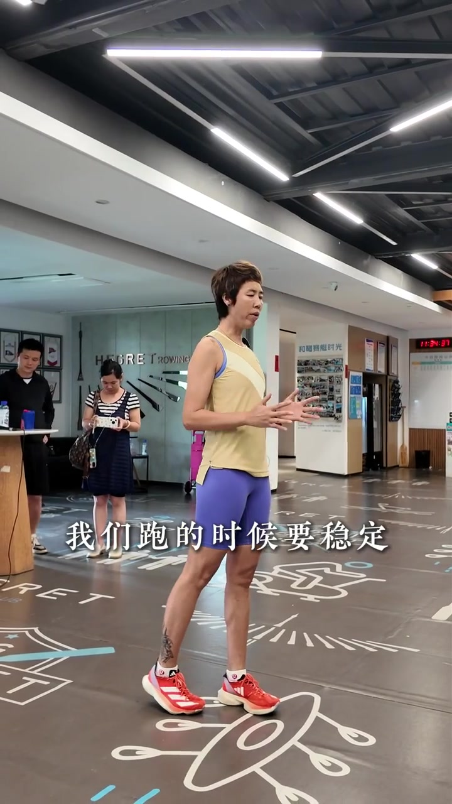
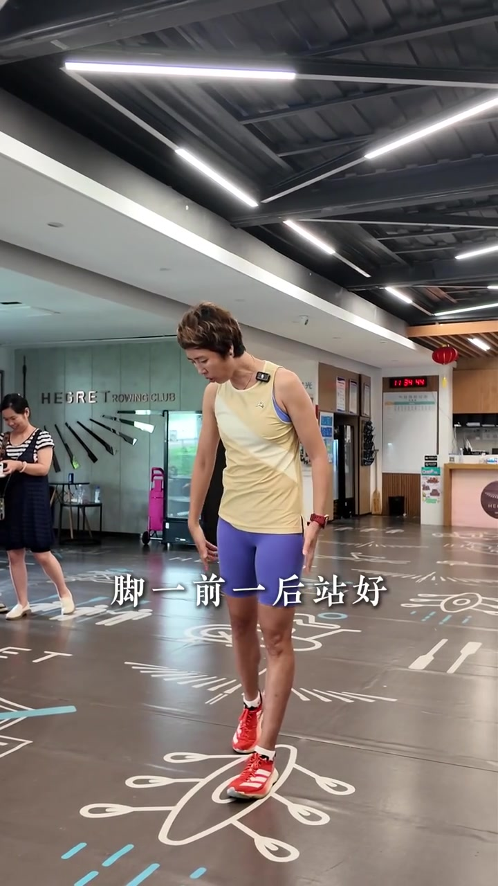
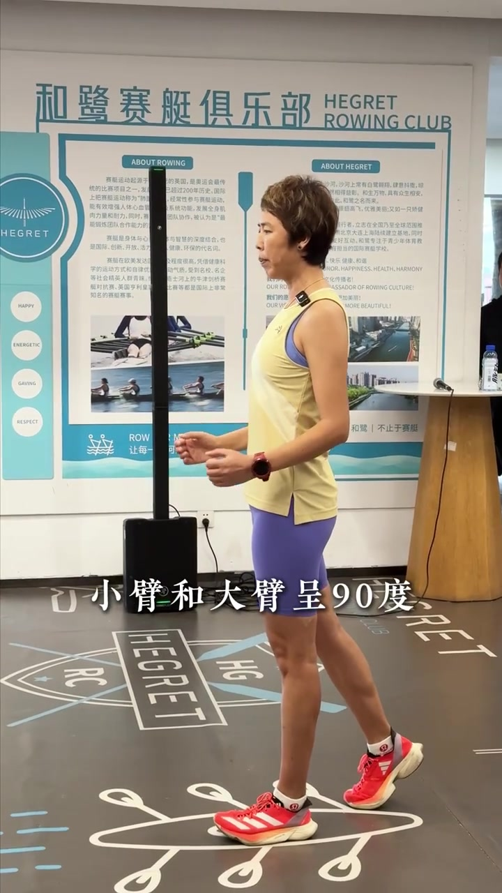
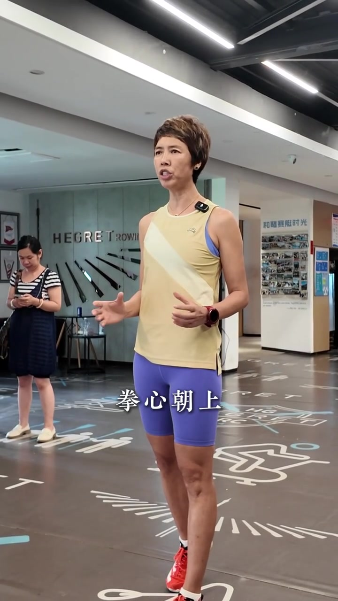
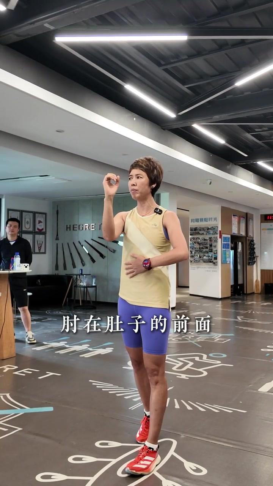
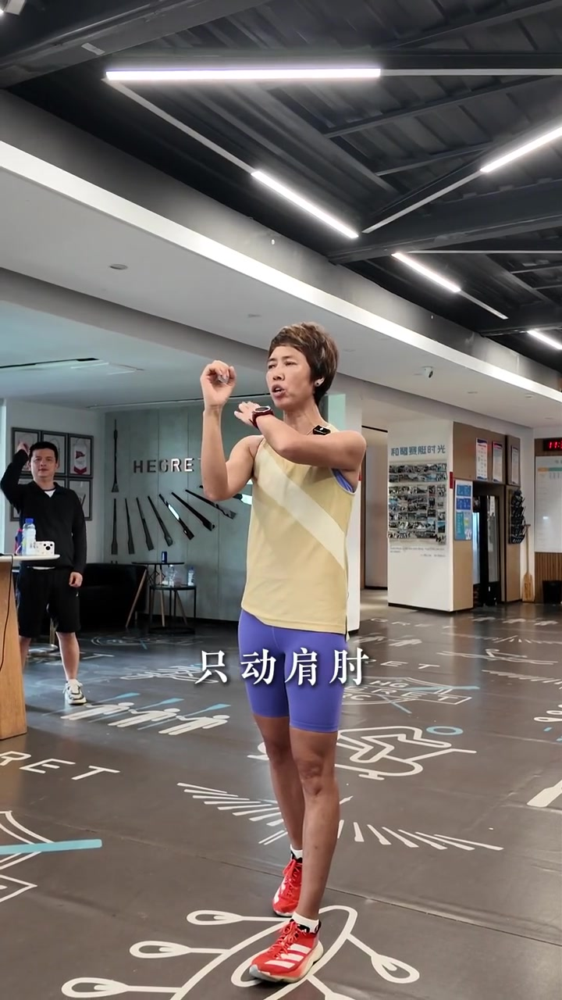
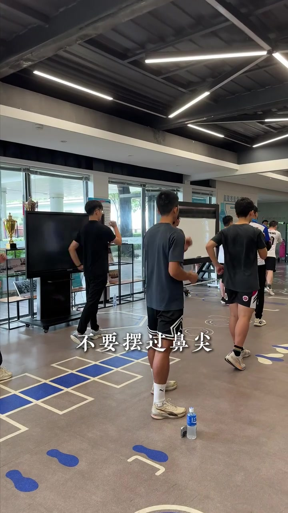
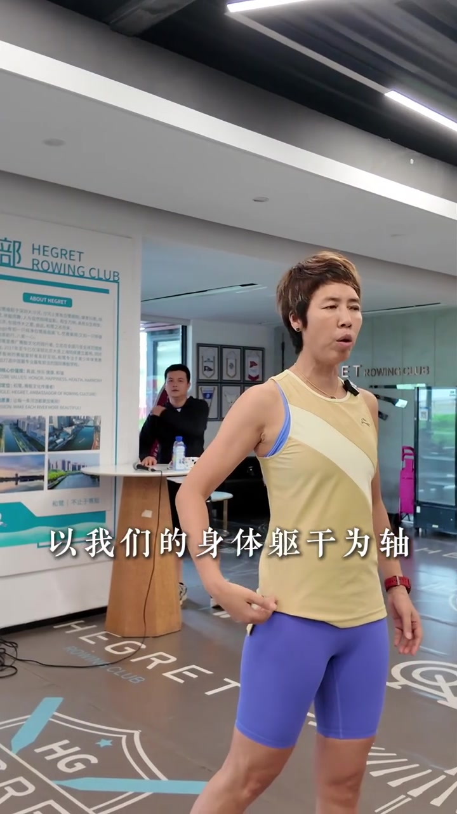

开场：跑要稳，摆臂却很少被讲透
镜头落在赛艇馆式的室内场地，郑辉穿着黄背心与红跑鞋，对着镜头说：跑的时候要稳定，所以摆臂很重要。她强调「没有一个人讲到摆臂」，自己却非常重视。画面字幕同步打出「我们跑的时候要稳定」。
「我们跑的时候要稳定，所以摆臂就很重要了。」
说明：Whisper 常把「摆臂」识别成「摆壁」；下文叙述结合画面字幕校正。完整转录区仍保留 Whisper 原始分段。

先站稳：一前一后，重心在前腿
她招呼大家一起学：脚一前一后站好，重心压在前腿上；脚、髋关节、头尽量落在一条垂直线上。自己低头用双手指向脚位，示范交错站姿。
画面字幕：「脚一前一后站好」

摆臂预备：90° 屈肘、空拳朝上、前摆到鼻尖
手臂位置被拆成几步：小臂与大臂成约 90°；大拇指扣在食指和中指之上，手握空拳、拳心朝上。接着找人体中线——双手合十落到鼻尖，作为「前摆最高」参考：虎口摆到鼻尖，小臂在胸前倾斜，肘停在肚子前方。
「小臂和大臂成 90 度……手握空拳，拳心朝上……前摆最高，虎口摆到鼻尖。」


她还反复提到「颈椎腰对一条直线」，要求头颈与躯干立住。讲解中途有人插话，她笑着说「那个蛮干的人，别干了……先等我讲完」，现场气氛轻松，但教学节奏很快重新接上。

后摆与大摆臂：手腕肘角不动，肘贴腰
后摆动作被说得很细：手腕不动、肘角不动，只动肩肘，90° 不变；肘贴近腰向后提起，做前后大摆臂。前摆不要越过鼻尖——摆过会后仰；肘贴腰则躯干不易左右晃，离腰一远就会晃起来。
「手腕不动，肘不动，只动肩肘，90 度不变；肘贴近腰，向后提起。」

镜头切到学员集体练习：一排人前后摆臂，字幕打出「不要摆过鼻尖」。郑辉数拍「一、二、三、四，很好」，确认节奏上来后，总结「这是大摆臂」。

大摆臂用在哪：短跑、间歇、上坡、冲刺
她明确大摆臂的场景：短跑、间歇跑、上坡跑和冲刺跑——需要更大驱动与更高节奏时，幅度可以打开。口播里 Whisper 把「间歇跑和上坡跑」误成「肩鞋跑和上颗跑」，结合语境与跑步术语校正。
「大摆臂用到短跑、间歇跑和上坡跑、冲刺跑。」
马拉松与长跑：同样动作，幅度收小
长跑并不换一套摆臂，而是「同样摆，只是幅度小一点」。以躯干为轴：前不露肘、后不露手；肘不超过肚皮，手不超过后背；仍然贴近腰，前后自然摆，只动肩肘、紧而不僵。她强调这样上去就减少晃动，并追问学员「能够觉察到吗」，末尾连说两遍「摆臂很重要」收束。
「以我们的身体的躯干为轴……前不露肘，后不露手……肘贴近腰，前后自然摆动。」

整段教学在室内完成，画面以教练演示与学员跟练交替；没有户外配速数据，重点是可当场照着做的体感标准：鼻尖上限、肘贴腰、90° 肘角、长短跑只改幅度。